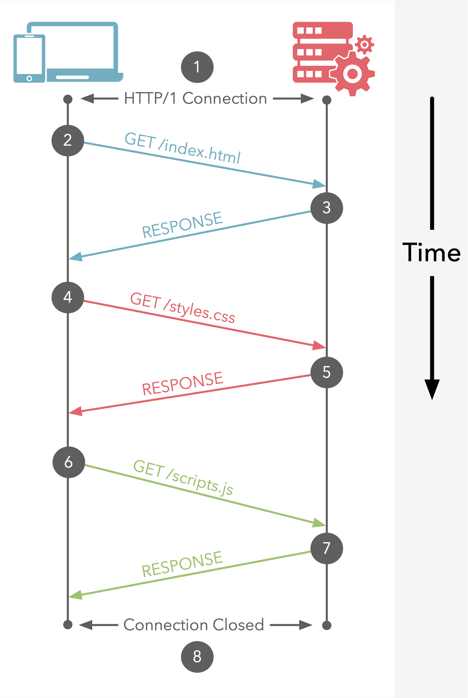

最近在做一个内部的服务对接，使用了Google的gRPC框架，gRPC是基于HTTP/2和protocol buffers实现的，所以额外去了解了一下HTTP/2，找到这这边文章。这篇文章虽然是写于2015年时间比较久远，但是对于HTTP/2的介绍很全面，于是花了些时间翻译了一下。
HTTP/2 诞生的意义
国际互联网工程任务组（The Internet Engineering Task Force，简称 IETF）在2015年2月通过了HTTP/2标准，自从1999年HTTP/1.1被列为标准后，HTTP/2是对HTTP(Hypertext Transfer Protocol)第一个大版本的更新。HTTP/2可以与HTTP/1.1高度兼容，但是却有更低的延迟。总而言之，HTTP/2就是为更快速的网站而生。
起源于SPDY
自从2009年底Google开发一个实验性质的协议SPDY(pronounced speedy)，SPDY是Google的一个标志并不是一个缩写。HTTP/2期初是就以SPDY的实验特性为基础的。实际上，很多SPDY的核心开发者都参与了HTTP/2的研发工作。直到2015年2月，Google宣布SPDY将被废弃，并主推HTTP/2，并在2016年完全替代。
HTTP/1.1
从1999年起，HTTP/1.1就已经开始为我们提供服务，HTTP/1.1的设计就是为众多的电脑终端使用互联网。不得不说，HTTP等一个革新实在是太久了。为了辅助理解HTTP/1的工作原理，我这里列举了一些图片。图片中的需要展示的是一个客户端（可能是个浏览器），如何与一个图片右侧服务器建立HTTP/1连接的。

② 浏览器客户端发送一个http get请求去获取一个网站的index.html页面。
③ 表示服务端返回请求的资源
④-⑦ 在这个简单的例子中，浏览器客户端不断地发送请求和获取response，加载样式和脚本文件来渲染和处理HTML文档。
⑧ 最后HTTP/1连接关闭。
队头阻塞（Head-of-Line Blocking）
正如你所见的，浏览器客户端浪费了大量的时间等待资源返回。主要是因为HTTP/1无法通过单一的连接来进行并发的请求，所以浏览器通常情况下采用打开多个连接的方式来加速获取资源的进程。
奢侈的连接
然而使用打开多个连接来辅助加速的方式，从计算机网络的角度来看，每打开一个连接都是非常奢侈的。由于建立连接的花销非常大，目前的浏览器都会对HTTP/1.1的最大连接数进行限制，一般为6-8个。但是很多网站，会去请求80个乃至更多的资源，因此，这个限制也会导致很大的性能瓶颈。
HTTP管线化(HTTP pipelining)
HTTP/1.1尝试通过HTTP管线化技术来解决这一性能瓶颈。不幸的是，一个体积很大的或慢response仍然会阻塞后面所有的请求。HTTP管线化技术并不是实施起来很困难，而是现阶段不可能实现。由于服务端中间件和服务器都不能很好的支持HTTP管线化，所以也没有任何一个浏览器去支持这一技术。
HTTP/2多路复用
多路复用允许多个request-response消息通过一个HTTP/2连接进行传输，同时为了展示HTTP/2有多高效，我准备了一个图片和HTTP/1进行对比。还是相同的配方，我们来看看在HTTP/2的支持下页面有多快开始进行渲染。
设想一下，如果对比的是一个更常见的一个场景80个请求需要请求的时候，通过HTTP/1.1每次建立6-8个连接去处理和HTTP/2通过一个连接就可以获取所有的请求，结果一目了然。
其他的HTTP/2性能优化点
除了多路复用之外，HTTP/2使用的是二进制传输而不是像HTTP/1使用文本。相较于文本协议，二进制解析起来更加的高效，具有更高的压缩率，且更不容易出错。
HTTP/2对请求的头部信息进行了压缩，这些都是HTTP/1所欠缺的。
服务端推（Server Push）
服务端推是HTTP/2的一个机制，服务端可以主动发送数据而不需要客户端的请求。举个例子，如果一个请求获取你的网站首页，服务端将会吧首页连带着logo和样式文件等一并返回，因为服务端知道这些文件客户端将会需要。这种机制的本质相当于，将这些资源与DOM文档进行内部关联，除此之外，推送的资源将会在客户端进行缓存。
服务端推技术的一个缺点是：当客户端已经缓存了资源就会造成资源浪费，这也是为什么我推荐使用服务端暗示（Server Hints）。
服务端暗示（Server Hints）
服务端暗示技术将会在客户端请求之前对将会需求的资源进行识别。但是服务器并不会发送完整的资源内容，仅仅是发送URL。客户端之后如果需要请求这些资源会先去校验缓存，然后去请求这些资源。服务端暗示技术并不是HTTP/2的新特性，但是就像前面所描述的那样，这个技术非常值得一提的是，不会有服务端推技术可能会造成资源冗余的缺点。
服务端暗示是使用HTTP Link头来实现，并且与已经存在的链接预取语义上重复。举个例子，一个HTTP Link头看起来是这样的：1
Link: <https://example.com/images/large-background.jpg>; rel=prefetch
如果HTML文档在head标签中包含链接预取属性的link，那么则不需要服务端进行实现。例子如下1
<link rel="prefetch" href="https://example.com/images/large-background.jpg">
要了解更多关于rel=”prefetch”, 可以查看Mozilla链接预取FAQ。
更新一步了解服务端暗示技术
preload rel属性通过声明一个资源和它的fetch属性来实现。这个规范通过使用额外的处理策略来拓展功能，从而当下一次导航的时候可以更高效的获取资源。举个例子：1
2
3
4
5<!-- fetch and preprocess for next navigation -->
<link rel="preload" href="//example.com/next-page.html" as="html" loadpolicy="next">
<!-- fetch and do not preprocess for next navigation -->
<link rel="preload" href="//example.com/next-component.html" as="html" loadpolicy="next inert">
“next inert”加载策略在一些浏览器实现上等同于rel=prefetch，”next”加载策略在一些浏览器实现语义上等同于rel=prerender。
该规范的实现拓展了先前的预取和预渲染功能
了解更多，可以查看Ilya Grigorik编辑，W3C发布的Resource Hints
HTTP/2安全批评
尽管HTTP/2的主要目的是使网站的速度更快，但是它也因为没有强制使用加密连接受到了大量的批评。因而领先的浏览器厂商因此很久没有去支持没有加密的HTTP/2。所以HTTP/2需要使用加密连接的方式来落地这一技术。可以来看我的另一篇文章HTTPS Everywhere，除非你不认为HTTPS是未来的网站的一个很好的发展方向。
浏览器支持情况
HTTP/2正在或即将被所有主流的浏览器支持
Chrome 40支持了HTTP/2第14草案，但是默认情况下没有启用。HTTP/2第17草案(最终草案)被Chrome Canary 43（预发布开发版）所使用。目前仅仅基于TLS（加密）的HTTP/2才被支持。
想要在Chrome浏览器启用启用HTTP/2，可以访问链接：1
chrome://flags/#enable-spdy4
火狐浏览器已经支持了HTTP/2并且从36版本开始默认是开启的。34版本中火狐浏览器开始实验性质地支持HTTP/2。目前仅仅实施了基于TLS的HTTP/2。
IE11仅仅在 Windows 10 beta版本支持HTTP/2，默认情况下是启用的，目前也是仅仅支持基于TLS的HTTP/2。
Spartan浏览器被期待支持基于TLS的HTTP/2，微软为Windows 10打造的新浏览器。
Safari在Mac OS X Yosemite (10.10)和iOS 8默认支持SPDY。预计在2015年底去全面支持HTTP/2。
Opera默认也是支持SPDY。一旦HTTP/2草案在Chrome浏览器中默认支持的时候，Opera也会全面支持。
服务端支持情况
支持HTTP/2
IIS (Internet Information Services) 在Windows 10 beta版本中支持HTTP/2。
OpenLiteSpeed在1.3.8和1.4.5中支持HTTP/2草案17.
支持SPDY, 但是不支持HTTP/2
Apache通过mod_spdy模块支持老版本的SPDY，但是目前这个模块已经停止开发了。
LiteSpeed Web Server目前支持SPDY/3.1。
Nginx通过模块提供实验性质的而支持SPDY (草案 3.1)，并且计划在2015年底开始支持HTTP/2。
没有打算支持HTTP/2的服务器
lighttpd 在1.x的版本中没有支持SPDY或者HTTP/2的计划。
其他支持HTTP/2的服务器
其他支持HTTP/2的比较有名的服务器可以在GitHub HTTP/2 wiki找到。
结语
正如我们的探索，HTTP/2对于Web是一个跨世纪的更新。因此在接下来的几年里将会被更加广泛的使用，网站和其他的Web服务想比以前将会变得更快更稳定。特别感谢这些具有前瞻性的浏览器开发者，HTTP/2也会提高用户的隐私和安全性。然而还有很长的一段路要走，我认为HTTP/2是这个互联网发展迈出的一大步。
如果你对于HTTP/2有任何的问题和想法，我将在我的Twitter进行回复@BenjaminPatch。
致谢
特别感谢Ilya Grigorik，一位Google优秀的Web性能工程师，感谢他对于这边文章提供的支持。Ilya也是《High-Performance Browser Networking》的作者，对于Web开发这来说是很好的学习网络和浏览器性能的资源。